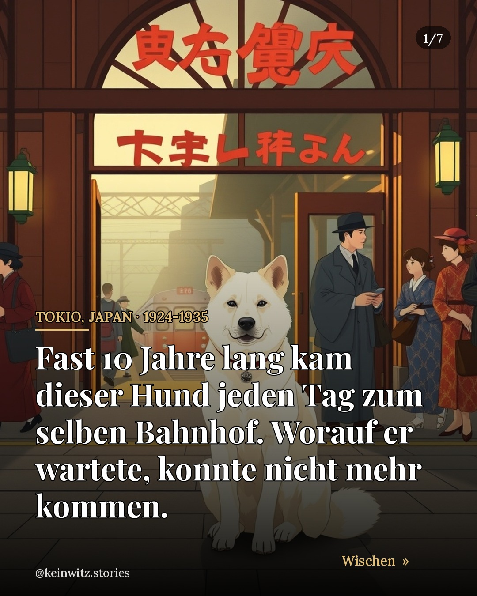

Tokio, Japan · 1924-1935
Hachikō, der Hund, der fast 10 Jahre wartete
Fast 10 Jahre Warten auf ein Herrchen, das nie mehr zurückkam. 🐕🚉
📖 Zum Weiterlesen: Hachiko: The True Story of a Loyal Dog · Pamela S. Turner
📚 Quellen: Nippon.com — Hachikō, the faithful dog · Wikipedia — Hachikō · Time Out Tokyo — 10 things about Hachiko